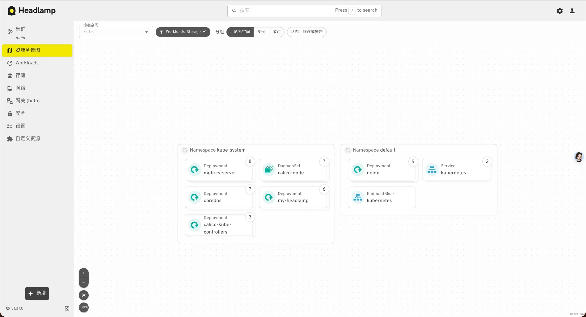

Kubernetes: k8s-安装篇-kueadm-1.37
- TAGS: Kubernetes
概述
k8s 架构和组件
整体架构
kubernetes(k8s) 是一个容器编排平台，核心目标：
- 自动部署、自动扩容、服务发现、负载均衡、自愈能力、滚动更新、高可用管理。

Kubernetes 集群由一个控制平面和一组用于运行容器化应用的工作机器组成， 这些工作机器称作节点（Node）。每个集群至少需要一个工作节点来运行 Pod。
工作节点托管着组成应用负载的 Pod。控制平面管理集群中的工作节点和 Pod。
控制平面组件
- kube-apiserver：集群核心入口，负责处理接受请求的工作。以下所有组件必需通过 apiserver 通信
- kubectl\controller\scheduler\kubelet
- etcd：键值数据库，保存集群的状态信息。高可用，通常为奇数节点。保存内容包括
- Pod\Deployment\Node\ConfigMap\Secret\Service\Endpoint
- kube-scheduler：负责 pod 的调度，决定 pod 运行在哪个 node 节点。调试依据
- CPU\内存\污点容忍\节点亲和性\Pod亲和性\数据本地性
- kube-controller-manager：运行各种控制器，保证 Pod 或其他资源到达期望值。常见的控制器
- Deployment Controller\ReplicaSet Controller\Node Controller\Endpoint Controller\ServeAccount Controller
- cloud-controller-manager：允许将你的集群连接到云提供商的 API 之上。
节点组件
- kubelet：管理当前节点的 Pod，对容器进行健康检查及监控。包括
- 接收PodSpec（从 apiserver 获取）
- 调用容器运行时。如 containerd\CRI-O
- 健康检查：livenessProbe\redinessProbe等
- 上报节点状态：CPU\内存\磁盘
- 挂载存储：PVC\ConfigMap
- kube-proxy： 实现 Service 网络转发。工作模式：
- iptables：通过 iptable NAT 实现转发
- IPVS: 性能高
- eBPF （新趋势）：Cilium （可替代 kube-proxy）
- 容器运行时（runtime）：负责容器的执行和生命周期。常见的有
- containerd（官方推荐）
- CRI-O
- Docker（已弃用 dockershim） 1.24 版本后移除。
插件（Addons）
- 网络插件 CNI(Container Network Interface)：负责为 pod 提供专用通信网络。calico\flannel
- DNS：CoreDns
容器资源监控：metrics-server 通过
metrics.k8s.ioAPI 提供给 k8s 使用。metrics server 在 k8s 中的位置kubetctl top/HPA/VPA/Dashboard metrics.k8s.io API metrics-server kubelet Summary API Node 资源数据
- Web 界面（仪表盘）：Headlamp
- 集群层面日志
环境准备
- 请不要使用带中文的服务器和克隆的虚拟机
- 生产环境建议使用二进制安装方式。
- 请将该文档复制一份，然后进行更改安装。
- 文档中的IP地址请统一替换，不要一个一个替换
网段划分
集群安装时会涉及到三个网段：
- 宿主机网段：就是安装k8s的服务器
- Pod网段：k8s Pod的网段，相当于容器的IP
- Service网段：k8s service网段，service用于集群容器通信。
一般 service 网段会设置为10.96.0.0/12
Pod 网段会设置成10.244.0.0/12 或者 172.16.0.1/12
宿主机网段可能是 192.168.0.0/24
需要注意的是这三个网段不能有任何交叉。
比如如果宿主机的IP是10.105.0.x
那么service网段就不能是10.96.0.0/12，因为10.96.0.0/12网段可用IP是：
10.96.0.1 ~ 10.111.255.255
所以10.105是在这个范围之内的，属于网络交叉，此时service网段需要更换，
可以更改为192.168.0.0/16网段（注意如果service网段是192.168开头的子网掩码最好不要是12，最好为16，因为子网掩码是12他的起始IP为192.160.0.1 不是192.168.0.1）。
同样的道理，技术别的网段也不能重复。可以通过 http://tools.jb51.net/aideddesign/ip_net_calc/ 计算。
所以一般的推荐是，直接第一个开头的就不要重复，比如
- 你的宿主机是 192 开头的，那么你的 service可以是 10.96.0.0/12.
- 如果你的宿主机是 10 开头的，就直接把 service的 网段改成 192.168.0.0/16
- 如果你的宿主机是 172 开头的，就直接把 pod 网段改成 192.168.0.0/12
注意搭配，均为 10 网段、172 网段、192 网段的搭配，第一个开头数字不一样就免去了网段冲突的可能性，也可以减去计算的步骤。
安装及优化部分
- 基本环境配置及优化
- 安装 Runtime
- k8s 组件 及 etcd 安装
- 高可用实现
集群建立部分
- 生成集群证书
- Master 节点初始化
- Node 节点配置
- CNI 插件安装
Addons 安装
- Metrics Server
- Dashboard
- CoreDNS
- …
收尾工作
- 集群可用性验证
- 生产必备配置
机器规划
k8s官网：https://kubernetes.io/docs/setup/
| 主机名 | IP地址 | 版本 | 配置 |
|---|---|---|---|
| master01.jasper.org | 10.0.0.101 | Ubuntu 26.04 | 2C2G 40G |
| master02.jasper.org | 10.0.0.102 | Ubuntu 26.04 | 2C2G 40G |
| master03.jasper.org | 10.0.0.103 | Ubuntu 26.04 | 2C2G 40G |
| kubeapi.jasper.org | 10.0.0.236 | Ubuntu 26.04 | keepalived虚拟 IP |
| node01.jasper.org | 10.0.0.104 | Ubuntu 26.04 | 2C2G 40G |
| node02.jasper.org | 10.0.0.105 | Ubuntu 26.04 | 2C2G 40G |
请统一替换这些网段，Pod网段和service和宿主机网段不要重复！
| 配置信息 | 备注 |
|---|---|
| Pod网段 | 10.244.0.0/12 |
| Service网段 | 10.96.0.0/12 |
说明：
- 宿主机网段、K8s Service网段、Pod网段不能重复.
- 不要使用中文的环境，还有不要克隆的虚拟机。生产环境，使用二进制安装。
- VIP（虚拟IP）不要和公司内网IP重复，首先去ping一下，不通才可用。VIP需要和主机在同一个局域网内！
- 公有云的话，VIP 为公有云的负载均衡的IP，比如阿里云的 SLB 地址，腾讯云的 ELB 地址，注意公有云的负载均衡都是内网的负载均衡。
所有主机初始化
一键初始化
bash install_kubernetes_containerd.sh
root@ubuntu2604:~# bash install_kubernetes_containerd.sh
1) 初始化新的Kubernetes集群 3) 退出Kubernetes集群
2) 加入Kubernetes集群前的环境准备 4) 退出本程序
请选择编号(1-4): 2
环境变量定义（master01）执行
方便后面执行命令，可以先定义相关变量，可选
root@jasper-server:~# cat /etc/os-release PRETTY_NAME="Ubuntu 26.04.1 LTS" NAME="Ubuntu" VERSION_ID="26.04" VERSION="26.04.1 LTS (Resolute Raccoon)" VERSION_CODENAME=resolute ID=ubuntu ID_LIKE=debian HOME_URL="https://www.ubuntu.com/" SUPPORT_URL="https://help.ubuntu.com/" BUG_REPORT_URL="https://bugs.launchpad.net/ubuntu/" PRIVACY_POLICY_URL="https://www.ubuntu.com/legal/terms-and-policies/privacy-policy" UBUNTU_CODENAME=resolute LOGO=ubuntu-logo
MASTER_IPS="10.0.0.101 10.0.0.102 10.0.0.103" NODE_IPS="10.0.0.104 10.0.0.105" K8S_VERSION=v1.37.1 #ETCD_VERSION=v3.7.0 CONTAINERD_VERSION=2.3.5 #CRI_DOCKER_VERSION=0.4.2 #POD_CIDR=172.16.0.0/12 #SERVICE_CIDR=192.168.0.0/16 POD_CIDR=10.244.0.0/16 SERVICE_CIDR=10.96.0.0/16 IFACE=eth0
配置 SSH 名密登录（master1 执行）
Master01 节点免密钥登录其他节点，安装过程中生成配置文件和证书均在 Master01 上操作，集群管理也在 Master01 上操作，阿里云或者 AWS 上需要单独一台 kubectl 服务器。密钥配置如下：
ssh-keygen -t rsa -N '' -f ~/.ssh/id_rsa for i in master01.jasper.org master02.jasper.org master03.jasper.org node01.jasper.org node02.jasper.org;do ssh-copy-id -i ~/.ssh/id_rsa.pub $i; done #或 for i in $MASTER_IPS $NODE_IPS;do ssh-copy-id -i ~/.ssh/id_rsa.pub $i; done
主机名和域名解析（所有节点执行）
# 1. 设置主机名（各自节点执行对应命令） # Master 节点 hostnamectl set-hostname master01.jasper.org && exit # Node 节点 hostnamectl set-hostname node01.jasper.org && exit # 2. 配置 /etc/hosts，添加所有节点的 IP 与主机名解析 cat >> /etc/hosts << EOF 10.0.0.101 master01.jasper.org master01 10.0.0.102 master02.jasper.org master02 10.0.0.103 master03.jasper.org master03 10.0.0.236 kubeapi.jasper.org kubeapi # VIP 虚IP不占用机器资源 # 如果不是高可用集群，该 IP 为 Master01 的 IP 10.0.0.104 node01.jasper.org node01 10.0.0.105 node02.jasper.org node02 EOF
注意： /etc/hosts 配置确保节点间可以通过主机名相互解析，这对 k8s 集群内通信至关重要
必备工具（可选）
# CentOS 7 安装yum源如下(作废) curl -o /etc/yum.repos.d/CentOS-Base.repo https://mirrors.aliyun.com/repo/Centos-7.repo yum install -y yum-utils device-mapper-persistent-data lvm2 yum-config-manager --add-repo https://mirrors.aliyun.com/docker-ce/linux/centos/docker-ce.repo sed -i -e '/mirrors.cloud.aliyuncs.com/d' -e '/mirrors.aliyuncs.com/d' /etc/yum.repos.d/CentOS-Base.repo # 必备工具安装 yum install wget jq psmisc vim net-tools telnet yum-utils device-mapper-persistent-data lvm2 git -y
关闭swap分区（所有节点执行）
swapoff -a && sysctl -w vm.swappiness=0 sed -ri '/^[^#]*swap/s@^@#@' /etc/fstab # k8s 要求禁用 swap 以确保调试和资源管理的准确性。开启 swap # 时 kubelet 默认拒绝启动， k8s-1.22 以后版本可以 # kubectl --fail-swap-on=false 允许开启 swap
同步时间（所有节点执行）
方法1-基于 chrony 实现时间同步（推荐）
Kubernetes 官方不建议使用 systemd-timesyncd，推荐 chrony
# 安装 apt update apt install -y chrony systemctl enable --now chrony systemctl status chrony #配置 cat > /etc/chrony/sources.d/ubuntu-ntp-pools.sources << EOF server ntp1.aliyun.com iburst minpoll 4 maxpoll 10 server cn.pool.ntp.org iburst minpoll 4 maxpoll 10 server s1b.time.edu.cn iburst minpoll 4 maxpoll 10 EOF # 把原来 makestep 1.0 3 修改，去掉次数限制，偏差>1s就允许跳 cp /etc/chrony/chrony.conf{,.bak} sed -i 's/^makestep .*/makestep 1 -1/g' /etc/chrony/chrony.conf systemctl restart chrony.service timedatectl set-timezone Asia/Shanghai # 修改时区 chronyc -a makestep # 强制同步下系统时钟 timedatectl set-ntp yes # 启用NTP服务 timedatectl # 查看时间同步源： chronyc sources -v # 查看时间同步源状态： chronyc sourcestats -v # 查看同步偏移量，看System time : 偏移值，越小越好 chronyc tracking
方法2-基于 systemd-timesyncd 实现时间同步
apt update apt install systemd-timesyncd # 开机自启 systemctl enable --now systemd-timesyncd timedatectl status # ubuntu 默认安装的轻量时间同步 systemd-timesyncd 可以支持时间同步，但不如 chronyd 精度高 systemctl status systemd-timesyncd # 优化为国内时间同步配置 cp /etc/systemd/timesyncd.conf{,.bak} cat > /etc/systemd/timesyncd.conf << EOF [Time] NTP=ntp.aliyun.com ntp.tencent.com ntp.ntsc.ac.cn FallbackNTP=cn.pool.ntp.org 0.cn.pool.ntp.org 1.cn.pool.ntp.org RootDistanceMaxSec=5 PollIntervalMinSec=32 PollIntervalMaxSec=2048 ConnectionRetrySec=30 SaveIntervalSec=60 EOF systemctl restart systemd-timesyncd timedatectl timesync-status
方法3-基于 ntpdate 的同时同步
# 安装 rpm -ivh http://mirrors.wlnmp.com/centos/wlnmp-release-centos.noarch.rpm yum install ntpdate -y # 所有节点同步时间。时间同步配置如下 ln -sf /usr/share/zoneinfo/Asia/Shanghai /etc/localtime echo 'Asia/Shanghai' >/etc/timezone ntpdate time2.aliyun.com # 加入到crontab */5 * * * * /usr/sbin/ntpdate time2.aliyun.com &>/dev/null
设置时区
# 列出所有时区 timedatectl list-timezones |grep Shanghai # 设置时区（上海时区 CST+8） timedatectl set-timezone Asia/Shanghai chronyc -a makestep # 强制同步下系统时钟 timedatectl set-ntp yes # 检查时区 ll /etc/localtime timedatectl
关闭防火墙（所有节点执行）
所有节点关闭firewalld 、dnsmasq、selinux(CentOS7需要关闭NetworkManager，CentOS8不需要)
# Ubuntu 默认使用 ufw，不是 firewalld ufw disable ufw status # CentOS systemctl disable --now firewalld systemctl disable --now dnsmasq systemctl disable --now NetworkManager setenforce 0 sed -i 's#SELINUX=enforcing#SELINUX=disabled#g' /etc/sysconfig/selinux sed -i 's#SELINUX=enforcing#SELINUX=disabled#g' /etc/selinux/config
limit(所有节点执行)
ulimit -SHn 65535 cat >/etc/security/limits.d/k8s.conf<<EOF * soft nofile 1000000 * hard nofile 1000000 * soft nproc 1000000 * hard nproc 1000000 * soft memlock unlimited * hard memlock unlimited root soft nofile 1000000 root hard nofile 1000000 root soft nproc unlimited root hard nproc unlimited root soft memlock unlimited root hard memlock unlimited EOF
内核优化 （所有节点执行）
ubuntu ipvs(1.35后 弃用)
# 1.安装 IPVS 模式所依赖的基础工具，否则 IPVS 模式下的 kube-proxy.service 服务无法启动 apt update && apt install -y ipvsadm ipset # (sysstat conntrack) #注释: #ipvsadm: 用于 IPVS 负载均衡模式(kube-proxy的一种模式)。 #ipset,conntrack: 网络过滤和连接跟踪工具，为Service网络提供支持。 # 2.加载必要内核模块 cat>/etc/modules-load.d/k8s.conf <<'EOF' br_netfilter overlay EOF #生效 systemctl enable --now systemd-modules-load.service # 3. 优化内核参数 cat <<EOF > /etc/sysctl.d/k8s.conf net.ipv4.ip_forward = 1 net.bridge.bridge-nf-call-iptables = 1 net.bridge.bridge-nf-call-ip6tables = 1 fs.file-max=10485760 fs.nr_open=10485760 EOF # 说明 # net.ipv4.ip_forward = 1 # 启用 IP 转发，这是容器网络通信的基础 # net.bridge.bridge-nf-call-iptables = 1 # 让网桥上的流量经过 iptables规则，用于 service 和网络策略 # net.bridge.bridge-nf-call-ip6tables = 1 # 让网桥上的流量经过 iptables规则，用于 service 和网络策略 # 使用内核配置生效 sysctl --system
内核升级
所有节点升级系统并重启，此处升级没有升级内核，下节会单独升级内核：
yum update -y --exclude=kernel* && reboot #CentOS7需要升级，CentOS8可以按需升级系统
CentOS7 需要升级内核至4.18+，本次升级的版本为4.19
在master01节点下载内核：(购买架构师课程的可以从百度网盘下载)
cd /root
wget http://193.49.22.109/elrepo/kernel/el7/x86_64/RPMS/kernel-ml-devel-4.19.12-1.el7.elrepo.x86_64.rpm
wget http://193.49.22.109/elrepo/kernel/el7/x86_64/RPMS/kernel-ml-4.19.12-1.el7.elrepo.x86_64.rpm
从master01节点传到其他节点：
for i in master02.jasper.org master03.jasper.org node01.jasper.org node02.jasper.org;do scp kernel-ml-4.19.12-1.el7.elrepo.x86_64.rpm kernel-ml-devel-4.19.12-1.el7.elrepo.x86_64.rpm $i:/root/ ; done
所有节点安装内核
cd /root && yum localinstall -y kernel-ml*
所有节点更改内核启动顺序
grub2-set-default 0 && grub2-mkconfig -o /etc/grub2.cfg grubby --args="user_namespace.enable=1" --update-kernel="$(grubby --default-kernel)"
检查默认内核是不是4.19
[root@master02.jasper.org ~]# grubby --default-kernel /boot/vmlinuz-4.19.12-1.el7.elrepo.x86_64
所有节点重启，然后检查内核是不是4.19
[root@master02.jasper.org ~]# uname -a Linux master02.jasper.org 4.19.12-1.el7.elrepo.x86_64 #1 SMP Fri Dec 21 11:06:36 EST 2018 x86_64 x86_64 x86_64 GNU/Linux
安装容器运行时（所有节点执行）
安装容器运行时 containerd
ARCH=$([ `arch` = "aarch64" ] && echo arm64 || echo amd64) CONTAINERD_VERSION=2.3.5 curl -SL -o containerd-${CONTAINERD_VERSION}-linux-${ARCH}.tar.gz https://github.com/containerd/containerd/releases/download/v${CONTAINERD_VERSION}/containerd-${CONTAINERD_VERSION}-linux-${ARCH}.tar.gz tar tf containerd-${CONTAINERD_VERSION}-linux-${ARCH}.tar.gz tar Cxzvf /usr/local containerd-${CONTAINERD_VERSION}-linux-${ARCH}.tar.gz #修改 containerd 配置基于 toml(Tom's Obvious Minim1Language)格式:toml.io mkdir /etc/containerd/ containerd config default >/etc/containerd/config.toml # 1) 将 sandbox 镜像源设置为阿里云 google_containers 镜像源(国内网络需要) grep sandbox /etc/containerd/config.toml sed -i "s#registry.k8s.io/pause#registry.aliyuncs.com/google_containers/pause#g" /etc/containerd/config.toml # 开启 systemd cgroup sed -i 's/SystemdCgroup = false/SystemdCgroup = true/g' /etc/containerd/config.toml # 2) 配置 docker 官方镜像代理（可选） ## registry 块里面的 config_path sed -rn '/config_path = .*/p' /etc/containerd/config.toml sed -ri "/\[plugins.'io.containerd.cri.v1.images'.registry/,/\[/s@config_path = .*@config_path = '/etc/containerd/certs.d'@g" /etc/containerd/config.toml mkdir -p /etc/containerd/certs.d/docker.io mkdir -p /etc/containerd/certs.d/registry.k8s.io ## docker.io 加速文件 cat > /etc/containerd/certs.d/docker.io/hosts.toml <<EOF server = "https://registry-1.docker.io" [host."https://docker.m.daocloud.io"] capabilities = ["pull","resolve"] [host."https://docker.lpanel.live"] capabilities = ["pull","resolve"] [host."https://docker.lms.run"] capabilities = ["pull","resolve"] [host."https://docker.xuanyuan.me"] capabilities = ["pull","resolve"] EOF #registry.k8s.io（pause、metrics-server）加速 cat > /etc/containerd/certs.d/registry.k8s.io/hosts.toml <<EOF server = "https://registry-1.k8s.io" [host."https://k8s.m.daocloud.io"] capabilities = ["pull","resolve"] EOF # 创建 systemd service（重点加入 LimitNOFILE，解决 limits 失效） cat > /lib/systemd/system/containerd.service <<EOF [Unit] Description=containerd container runtime Documentation=https://containerd.io After=network.target local-fs.target [Service] ExecStartPre=-/sbin/modprobe overlay ExecStart=/usr/local/bin/containerd Type=notify Delegate=yes KillMode=process Restart=always RestartSec=5 #解决ulimit不生效，systemd直接设置上限 LimitNOFILE=1000000 LimitNPROC=1000000 LimitMEMLOCK=infinity TasksMax=infinity OOMScoreAdjust=-999 [Install] WantedBy=multi-user.target EOF systemctl daemon-reload && systemctl enable --now containerd systemctl status containerd #journalctl -u containerd -f # 验证进程真实 limit pidof containerd cat /proc/$(pidof containerd)/limits
安装依赖 runc
containerd 本身只是容器管理守护进程，runc 是 OCI runtime，用来真正启动容器进程。
Ubuntu 系统安装 containerd 包， 不会自动附带 runc，必须手动安装。
RUNC_VERSION=1.5.0 ARCH=$([ `arch` = "aarch64" ] && echo arm64 || echo amd64) wget https://github.com/opencontainers/runc/releases/download/v${RUNC_VERSION}/runc.${ARCH} install -m 755 runc.${ARCH} /usr/local/bin/runc runc --version # 检查 containerd 配置，确认 runc 路径 cp /etc/containerd/config.toml{,.bak} sed -i 's@BinaryName =.*@BinaryName = "/usr/local/bin/runc"@g' /etc/containerd/config.toml systemctl restart containerd systemctl status containerd
安装 crictl（CRI 客户端，k8s 运维必备）
- https://kubernetes.io/zh-cn/docs/tasks/debug/debug-cluster/crictl/
- github https://github.com/kubernetes-sigs/cri-tools
VERSION="v1.37.0" ARCH=$([ `arch` = "aarch64" ] && echo arm64 || echo amd64) wget https://github.com/kubernetes-sigs/cri-tools/releases/download/${VERSION}/crictl-${VERSION}-linux-$ARCH.tar.gz sudo tar zxvf crictl-${VERSION}-linux-$ARCH.tar.gz -C /usr/local/bin #rm -f crictl-${VERSION}-linux-$ARCH.tar.gz # 配置crictl客户端连接 cat > /etc/crictl.yaml <<EOF runtime-endpoint: unix:///run/containerd/containerd.sock image-endpoint: unix:///run/containerd/containerd.sock timeout: 10 debug: false EOF # 验证 #crictl info
所有主机安装 kubeadm、kubelet和kubectl
所有节点安装最新版本kubeadm
#yum list kubeadm.x86_64 --showduplicates | sort -r # 阿里源安装方法 https://developer.aliyun.com/mirror/kubernetes KUBE_VERSION=1.37.1 KUBE_RELEASE=${KUBE_VERSION}-1.1 KUBE_MAJOR_VERSION=`echo ${KUBE_VERSION}| cut -d . -f 1,2` apt-get update && apt-get install -y apt-transport-https #curl -fsSL https://pkgs.k8s.io/core:/stable:/v${KUBE_MAJOR_VERSION}/deb/Release.key | sudo gpg --dearmor -o /etc/apt/keyrings/kubernetes-apt-keyring.gpg #echo 'deb [signed-by=/etc/apt/keyrings/kubernetes-apt-keyring.gpg] https://pkgs.k8s.io/core:/stable:/v${KUBE_MAJOR_VERSION}/deb/ /' | sudo tee /etc/apt/sources.list.d/kubernetes.list curl -fsSL https://mirrors.aliyun.com/kubernetes-new/core/stable/v${KUBE_MAJOR_VERSION}/deb/Release.key | gpg --dearmor -o /etc/apt/keyrings/kubernetes-apt-keyring.gpg echo "deb [signed-by=/etc/apt/keyrings/kubernetes-apt-keyring.gpg] https://mirrors.aliyun.com/kubernetes-new/core/stable/v${KUBE_MAJOR_VERSION}/deb/ /" > /etc/apt/sources.list.d/kubernetes.list apt-get update apt-cache madison kubeadm |head # 查看有哪些版本 #安装指定版本 apt install -y kubeadm=${KUBE_RELEASE} kubelet=${KUBE_RELEASE} kubectl=${KUBE_RELEASE} #apt install -y kubeadm kubelet kubectl #实现kubectl命令自动补全功能 kubectl completion bash > /etc/profile.d/kubectl_completion.sh kubeadm version
# 准备所需要的镜像(不用做) KUBE_VERSION=1.37.1 kubeadm config images list --kubernetes-version=v${KUBE_VERSION} # 可以提前把镜像下载好，这样安装快（可选步骤） crictl pull registry.aliyuncs.com/google_containers/kube-apiserver:v${KUBE_VERSION} crictl pull registry.aliyuncs.com/google_containers/kube-controller-manager:v${KUBE_VERSION} crictl pull registry.aliyuncs.com/google_containers/kube-scheduler:v${KUBE_VERSION} crictl pull registry.aliyuncs.com/google_containers/kube-proxy:v${KUBE_VERSION} crictl pull registry.aliyuncs.com/google_containers/pause:3.10.2 crictl pull registry.aliyuncs.com/google_containers/etcd:3.7.0-0 crictl pull registry.aliyuncs.com/google_containers/coredns:v1.14.6
由于还未初始化，没有kubelet的配置文件，此时kubelet无法启动，无需管理
高可用实现(弃用，这里使用kube-vip)
高可用配置（注意：如果不是高可用集群，haproxy 和 keepalived 无需安装）
如果在云上安装也无需执行此章节的步骤，可以直接使用云上的 lb，比如阿里云 slb，腾讯云 elb 等
公有云要用公有云自带的负载均衡，比如阿里云的 SLB，腾讯云的 ELB，用来替代 haproxy 和 keepalived，因为公有云大部分都是不支持 keepalived的，另外如果用阿里云的话，kubectl 控制端不能放在 master 节点，推荐使用腾讯云，因为阿里云的 slb 有回环的问题，也就是 slb 代理的服务器不能反向访问 SLB，但是腾讯云修复了这个问题。
Slb -> haproxy -> apiserver
所有 Master 节点安装 keepalived 和 haproxy
apt install keepalived haproxy -y
Master 节点 HAProxy
所有 Master 配置 HAProxy，配置一样
vim /etc/haproxy/haproxy.cfg
cp /etc/haproxy/haproxy.cfg{,.bak}
cat > /etc/haproxy/haproxy.cfg << EOF
global
maxconn 2000
ulimit-n 16384
log 127.0.0.1 local0 err
stats timeout 30s
defaults
log global
mode http
option httplog
timeout connect 5000
timeout client 50000
timeout server 50000
timeout http-request 15s
timeout http-keep-alive 15s
frontend k8s-master
bind 0.0.0.0:8443
bind 127.0.0.1:8443
mode tcp
option tcplog
tcp-request inspect-delay 5s
default_backend k8s-master
backend k8s-master
mode tcp
option tcplog
option tcp-check
balance roundrobin
default-server inter 10s downinter 5s rise 2 fall 2 slowstart 60s maxconn 250 maxqueue 256 weight 100
server master01.jasper.org 10.0.0.101:6443 check
server master02.jasper.org 10.0.0.102:6443 check
server master03.jasper.org 10.0.0.103:6443 check
EOF
master01 keepalived
所有 Master 节点配置 KeepAlived，配置不一样，注意区分 :
- 网卡名称 interface
- mcast_src_ip 地址
- virtual_ipaddress 虚拟 vip 地址，与主机在同一网段内
- 注意每个节点的IP和网卡（interface参数）
cat > /etc/keepalived/keepalived.conf << EOF
! Configuration File for keepalived
global_defs {
router_id LVS_DEVEL
}
vrrp_script chk_apiserver {
script "/etc/keepalived/check_apiserver.sh"
interval 5
weight -5
fall 2
rise 1
}
vrrp_instance VI_1 {
state MASTER
interface eth0
mcast_src_ip 10.0.0.101
virtual_router_id 61
priority 101
nopreempt
advert_int 2
authentication {
auth_type PASS
auth_pass K8SHA_KA_AUTH
}
virtual_ipaddress {
10.0.0.236
}
track_script {
chk_apiserver
} }
EOF
master02 keepalived
cat > /etc/keepalived/keepalived.conf << EOF
! Configuration File for keepalived
global_defs {
router_id LVS_DEVEL
}
vrrp_script chk_apiserver {
script "/etc/keepalived/check_apiserver.sh"
interval 5
weight -5
fall 2
rise 1
}
vrrp_instance VI_1 {
state BACKUP
interface eth0
mcast_src_ip 10.0.0.102
virtual_router_id 61
priority 100
nopreempt
advert_int 2
authentication {
auth_type PASS
auth_pass K8SHA_KA_AUTH
}
virtual_ipaddress {
10.0.0.236
}
track_script {
chk_apiserver
} }
EOF
master03 keepalived
cat > /etc/keepalived/keepalived.conf << EOF
! Configuration File for keepalived
global_defs {
router_id LVS_DEVEL
}
vrrp_script chk_apiserver {
script "/etc/keepalived/check_apiserver.sh"
interval 5
weight -5
fall 2
rise 1
}
vrrp_instance VI_1 {
state BACKUP
interface eth0
mcast_src_ip 10.0.0.103
virtual_router_id 61
priority 100
nopreempt
advert_int 2
authentication {
auth_type PASS
auth_pass K8SHA_KA_AUTH
}
virtual_ipaddress {
10.0.0.236
}
track_script {
chk_apiserver
} }
EOF
健康检查配置
所有master节点
cat > /etc/keepalived/check_apiserver.sh <<\EOF
#!/bin/bash
err=0
for k in $(seq 1 3)
do
check_code=$(pgrep haproxy)
if [[ $check_code == "" ]]; then
err=$(expr $err + 1)
sleep 1
continue
else
err=0
break
fi
done
if [[ $err != "0" ]]; then
echo "systemctl stop keepalived"
/usr/bin/systemctl stop keepalived
exit 1
else
exit 0
fi
EOF
chmod +x /etc/keepalived/check_apiserver.sh
所有 master 节点启动 haproxy 和 keepalived
systemctl daemon-reload systemctl enable --now haproxy systemctl enable --now keepalived systemctl restart haproxy keepalived
VIP测试
[root@master01.jasper.org pki]# ping 10.0.0.236 PING 10.0.0.236 (10.0.0.236) 56(84) bytes of data. 64 bytes from 10.0.0.236: icmp_seq=1 ttl=64 time=1.39 ms 64 bytes from 10.0.0.236: icmp_seq=2 ttl=64 time=2.46 ms 64 bytes from 10.0.0.236: icmp_seq=3 ttl=64 time=1.68 ms 64 bytes from 10.0.0.236: icmp_seq=4 ttl=64 time=1.08 ms
重要：如果安装了 keepalived 和 haproxy，需要测试 keepalived 是否是正常的
nc -zv 10.0.0.236 8443 Connection to 10.0.0.236 8443 port [tcp/*] succeeded!
如果 ping 不通且 telnet/nc 没有出现 ]，则认为 VIP 不可以，不可在继续往下执行，需要排查 keepalived 的问题，比如防火墙和 selinux，haproxy 和 keepalived 的状态，监听端口等
所有节点查看防火墙状态必须为 disable 和 inactive：systemctl status firewalld
所有节点查看 selinux 状态，必须为 disable：getenforce
master节点查看 haproxy 和 keepalived 状态：systemctl status keepalived haproxy
master节点查看监听端口：netstat -lntp
集群初始化
kubeadm 命令使用
Available Commands:
alpha #kubeadm 处于测试阶段的命令
completion #bash 命令补全，需要安装 bash-completion
#mkdir /data/scripts -p
#kubeadm completion bash > /data/scripts/kubeadm_completion.sh
#source /data/scripts/kubeadm_completion.sh
#vim /etc/profile #添加内容
source /data/scripts/kubeadm_completion.sh
config #管理 kubeadm 集群的配置，该配置保留在集群的 ConfigMap 中
#kubeadm config print init-defaults
help Help about any command
init #启动一个 Kubernetes 主节点
join #将节点加入到已经存在的 k8s master
reset #还原使用 kubeadm init 或者 kubeadm join 对系统产生的环境变化。清空节点数据
token #管理 token
upgrade #升级 k8s 版本
version #查看版本信息
kubeadm init 命令简介
命令使用： https://kubernetes.io/zh/docs/reference/setup-tools/kubeadm/
集群初始化： https://kubernetes.io/zh/docs/reference/setup-tools/kubeadm/kubeadm-init/
root@docker-k8s-node1:~# kubeadm init --help --apiserver-advertise-address string #K8S API Server 将要监听的监听的本机 IP --apiserver-bind-port int32 #API Server 绑定的端口,默认为 6443 --apiserver-cert-extra-sans stringSlice #可选的证书额外信息，用于指定 API Server 的服务器证书。可以是 IP 地址也可以是 DNS 名称。 --cert-dir string #证书的存储路径，缺省路径为 /etc/kubernetes/pki --certificate-key string #定义一个用于加密 kubeadm-certs Secret 中的控制平台证书的密钥 --config string #kubeadm #配置文件的路径 --control-plane-endpoint string #为控制平台指定一个稳定的 IP 地址或 DNS 名称，即配置一个可以长期使用切是高可用的 VIP 或者域名， k8s多master 高可用基于此参数实现 --cri-socket string #要连接的 CRI(容器运行时接口，Container Runtime Interface, 简称 CRI)套接字的路径，如果为空，则 kubeadm 将尝试自动检测此值，"仅当安装了多个 CRI 或具有非标准 CRI 插槽时，才使用此选项" --dry-run #不要应用任何更改，只是输出将要执行的操作，其实就是测试运行。 --experimental-kustomize string #用于存储 kustomize 为静态 pod 清单所提供的补丁的路径。 --feature-gates string #一组用来描述各种功能特性的键值（key=value）对，选项是：IPv6DualStack=true|false (ALPHA - default=false) --ignore-preflight-errors strings #可以忽略检查过程 中出现的错误信息，比如忽略 swap，如果为 all 就忽略所有 --image-repository string #设置一个镜像仓库，默认为 k8s.gcr.io --kubernetes-version string #指定安装 k8s 版本，默认为 stable-1 --node-name string #指定 node 节点名称 --pod-network-cidr #设置 pod ip 地址范围 --service-cidr #设置 service 网络地址范围，默认值："10.96.0.0/12" --service-dns-domain string #设置 k8s内部域名，默认为 cluster.local，会有相应的 DNS 服务(kube-dns/coredns)解析生成的域名记录。可以换成公司内部使用的域名，如me.local --skip-certificate-key-print #不打印用于加密的key 信息 --skip-phases strings #要跳过哪些阶段 --skip-token-print #跳过打印 token 信息 --token #指定 token --token-ttl #指定 token 过期时间，默认为 24 小时，0 为永不过期 --upload-certs #更新证书 #全局可选项： --add-dir-header #如果为 true，在日志头部添加日志目录 --log-file string #如果不为空，将使用此日志文件 --log-file-max-size uint #设置日志文件的最大大小，单位为兆，默认为 1800 兆，0 为没有限制 --rootfs #宿主机的根路径，也就是绝对路径 --skip-headers #如果为 true，在 log 日志里面不显示标题前缀 --skip-log-headers #如果为 true，在 log 日志里里不显示标题
验证前 当前 kubeadm 版本
kubeadm version #查看当前 kubeadm 版本
准备镜像：
#查看安装指定版本 k8s 需要的镜像有哪些 KUBE_VERSION=1.37.1 kubeadm config images list --kubernetes-version=v${KUBE_VERSION} k8s.gcr.io/kube-apiserver: k8s.gcr.io/kube-controller-manager: k8s.gcr.io/kube-scheduler: k8s.gcr.io/kube-proxy: k8s.gcr.io/pause: #为每个pod封装一个底层的网络 k8s.gcr.io/etcd: k8s.gcr.io/coredns/coredns:
高可用 master 初始化
Master01节点执行
以下文件内容，宿主机网段、podSubnet网段、serviceSubnet网段不能重复
KUBE_VERSION=1.37.1 IMAGES_URL="registry.aliyuncs.com/google_containers" POD_NETWORK="10.244.0.0/16" SERVICE_NETWORK="10.96.0.0/12" DOMAIN=jasper.org #CONTROL_PLAN="kubeapi.${DOMAIN}:8443" #kubeadm init --control-plane-endpoint="kubeapi.${DOMAIN}" \ # --control-plane-endpoint=${CONTROL_PLAN} \ # --kubernetes-version=v${KUBE_VERSION} \ # --pod-network-cidr=${POD_NETWORK} \ # --service-cidr=${SERVICE_NETWORK} \ # --token-ttl=0 \ # --upload-certs \ # --image-repository=${IMAGES_URL} \ # --skip-phases=addon/kube-proxy # kubeadm init --control-plane-endpoint="kubeapi.${DOMAIN}" \ --kubernetes-version=v${KUBE_VERSION} \ --pod-network-cidr=${POD_NETWORK} \ --service-cidr=${SERVICE_NETWORK} \ --token-ttl=0 \ --upload-certs \ --image-repository=${IMAGES_URL} \ --skip-phases=addon/kube-proxy #注意:--skip-phases=addon/kube-proxy表示不安装kube-proxy #有如下输出结果
初始化成功以后，会产生Token值，用于其他节点加入时使用，因此要记录下初始化成功生成的token值（令牌值）：
To start using your cluster, you need to run the following as a regular user: mkdir -p $HOME/.kube sudo cp -i /etc/kubernetes/admin.conf $HOME/.kube/config sudo chown $(id -u):$(id -g) $HOME/.kube/config Alternatively, if you are the root user, you can run: export KUBECONFIG=/etc/kubernetes/admin.conf You should now deploy a pod network to the cluster. Run "kubectl apply -f [podnetwork].yaml" with one of the options listed at: https://kubernetes.io/docs/concepts/cluster-administration/addons/ You can now join any number of control-plane nodes running the following command on each as root: kubeadm join kubeapi.jasper.org:6443 --token dziprk.vq9csjpsvpqthw7l \ --discovery-token-ca-cert-hash sha256:de98d23307d8d730734a461cc6ecb715f301daf9ecbfeabf266467440e81af0b \ --control-plane --certificate-key 723fd45230337a0ef7d5dcd990a19815ac3bddbc3e5dc6d45dea1fc6e7402031 Please note that the certificate-key gives access to cluster sensitive data, keep it secret! As a safeguard, uploaded-certs will be deleted in two hours; If necessary, you can use "kubeadm init phase upload-certs --upload-certs" to reload certs afterward. Then you can join any number of worker nodes by running the following on each as root: kubeadm join kubeapi.jasper.org:6443 --token dziprk.vq9csjpsvpqthw7l \ --discovery-token-ca-cert-hash sha256:de98d23307d8d730734a461cc6ecb715f301daf9ecbfeabf266467440e81af0b
如果初始化失败，重置后再次初始化，命令如下（没有失败不要执行）：
kubeadm reset -f ; ipvsadm --clear ; rm -rf ~/.kube
Master01节点配置环境变量，用于访问Kubernetes集群：
# 执行授权 mkdir -p $HOME/.kube sudo cp -i /etc/kubernetes/admin.conf $HOME/.kube/config # 配置 kubectl 命令补全 apt update && apt -y install bash-completion echo 'source <(kubeadm completion bash)' >> ~/.bashrc && exit #source ~/.bashrc
查看状态：
# vim /etc/hosts 监控把 kubeapi 解析到 10.0.0.101 上，并查看以下状态 # 因为没有网络插件，节点处于 NotReady 状态 root@master01:~# kubectl get node NAME STATUS ROLES AGE VERSION master01.jasper.org NotReady control-plane 7m31s v1.37.1 # 因为没有网络插件，coredns 的 Pod 处于 NotReady 状态 root@master01:~# kubectl get pod -A NAMESPACE NAME READY STATUS RESTARTS AGE kube-system coredns-558f5766d5-c4r5k 0/1 Pending 0 2m22s kube-system coredns-558f5766d5-vh87l 0/1 Pending 0 2m22s kube-system etcd-master01.jasper.org 1/1 Running 1 2m29s kube-system kube-apiserver-master01.jasper.org 1/1 Running 1 2m29s kube-system kube-controller-manager-master01.jasper.org 1/1 Running 1 2m29s kube-system kube-scheduler-master01.jasper.org 1/1 Running 1 2m29s
kubeadm init 创建 k8s 集群流程 https://kubernetes.io/zh/docs/reference/setup-tools/kubeadm/kubeadm-init/
在 master1 节点生成 kube-vip Static Pod
export VIP=10.0.0.236 export INTERFACE=eth0 KVVERSION=$(curl -sL https://api.github.com/repos/kube-vip/kube-vip/releases | jq -r ".[0].name") export KVVERSION=v1.2.4 #需要提前下载镜像 ctr -n k8s.io image pull ghcr.io/kube-vip/kube-vip:$KVVERSION ctr -n k8s.io run --rm --net-host ghcr.io/kube-vip/kube-vip:$KVVERSION vip \ /kube-vip manifest pod \ --interface $INTERFACE \ --address $VIP \ --controlplane \ --leaderElection \ --arp \ > /etc/kubernetes/manifests/kube-vip.yaml # 会自动启动 root@master01:~# kubectl get pod -A NAMESPACE NAME READY STATUS RESTARTS AGE kube-system coredns-558f5766d5-c4r5k 0/1 Pending 0 4m47s kube-system coredns-558f5766d5-vh87l 0/1 Pending 0 4m47s kube-system etcd-master01.jasper.org 1/1 Running 1 4m54s kube-system kube-apiserver-master01.jasper.org 1/1 Running 1 4m54s kube-system kube-controller-manager-master01.jasper.org 1/1 Running 1 4m54s kube-system kube-scheduler-master01.jasper.org 1/1 Running 1 4m54s kube-system kube-vip-master01.jasper.org 1/1 Running 0 7s root@master01:~# ip a 2: eth0: <BROADCAST,MULTICAST,UP,LOWER_UP> mtu 1500 qdisc fq_codel state UP group default qlen 1000 link/ether 00:0c:29:11:d3:79 brd ff:ff:ff:ff:ff:ff altname enp2s0 altname enx000c2911d379 inet 10.0.0.101/24 brd 10.0.0.255 scope global eth0 valid_lft forever preferred_lft forever inet 10.0.0.236/32 scope global deprecated eth0 valid_lft forever preferred_lft forever inet6 fe80::20c:29ff:fe11:d379/64 scope link proto kernel_ll valid_lft forever preferred_lft forever root@master01:~# ping kubeapi.jasper.org PING kubeapi.jasper.org (10.0.0.236) 56(84) bytes of data. 64 bytes from kubeapi.jasper.org (10.0.0.236): icmp_seq=1 ttl=64 time=0.089 ms root@master03:~# ping kubeapi.jasper.org PING kubeapi.jasper.org (10.0.0.236) 56(84) bytes of data. 64 bytes from kubeapi.jasper.org (10.0.0.236): icmp_seq=1 ttl=64 time=0.475 ms 64 bytes from kubeapi.jasper.org (10.0.0.236): icmp_seq=2 ttl=64 time=0.405 ms
# pod vip 高可用。将 kube-vip 启动配置推送到其他 master 节点上。 # 有个 vip pod 坏，会在对应的主机上启动 vip ip 地址。 scp /etc/kubernetes/manifests/kube-vip.yaml master02:/etc/kubernetes/manifests/ scp /etc/kubernetes/manifests/kube-vip.yaml master03:/etc/kubernetes/manifests/ root@master01:~# kubectl get pod -A NAMESPACE NAME READY STATUS RESTARTS AGE kube-system kube-vip-master01.jasper.org 1/1 Running 0 34m kube-system kube-vip-master02.jasper.org 0/1 ContainerCreating 0 33s kube-system kube-vip-master03.jasper.org 0/1 ContainerCreating 0 27s
加入其他 Master 节点到集群
初始化其他master加入集群, master02, 03加上
# 其他 maseter 节点加入集群 kubeadm join kubeapi.jasper.org:6443 --token dziprk.vq9csjpsvpqthw7l \ --discovery-token-ca-cert-hash sha256:de98d23307d8d730734a461cc6ecb715f301daf9ecbfeabf266467440e81af0b \ --control-plane --certificate-key 723fd45230337a0ef7d5dcd990a19815ac3bddbc3e5dc6d45dea1fc6e7402031 root@master01:~# kubectl get node NAME STATUS ROLES AGE VERSION master01.jasper.org NotReady control-plane 23m v1.37.1 master02.jasper.org NotReady control-plane 15s v1.37.1 master03.jasper.org NotReady control-plane 3m3s v1.37.1
token 过期处理
# Token过期后生成新的token： root@master01:~# kubeadm token create --print-join-command kubeadm join kubeapi.jasper.org:6443 --token an2oq3.7o47k0ukbljgwvz4 --discovery-token-ca-cert-hash sha256:de98d23307d8d730734a461cc6ecb715f301daf9ecbfeabf266467440e81af0b # Master需要生成 --certificate-key root@master01:~# kubeadm init phase upload-certs --upload-certs [upload-certs] Storing the certificates in Secret "kubeadm-certs" in the "kube-system" Namespace [upload-certs] Using certificate key: cefdae80b20e904ef61ee93a860bea139be3e2df8dae95c13ee62e3841a45471
查看 token 过期时间
# 检查初始集群时的配置文件，找到 token: 7t2weq.bjbawausm0jaxury secret=$(kubectl get secret -n kube-system|grep bootstrap |grep an2oq3 | awk '{print $1}') kubectl -n kube-system get secret $secret -o json | jq -r '.data["expiration"]' | base64 -d
添加Node节点
kubeadm join kubeapi.jasper.org:6443 --token an2oq3.7o47k0ukbljgwvz4 \
--discovery-token-ca-cert-hash sha256:de98d23307d8d730734a461cc6ecb715f301daf9ecbfeabf266467440e81af0b
查看集群状态：
root@master01:~# kubectl get node NAME STATUS ROLES AGE VERSION master01.jasper.org NotReady control-plane 32m v1.37.1 master02.jasper.org NotReady control-plane 9m32s v1.37.1 master03.jasper.org NotReady control-plane 12m v1.37.1 node01.jasper.org NotReady <none> 28s v1.37.1 node02.jasper.org NotReady <none> 3s v1.37.1 #移除节点 #kubectl drain node01.jasper.org #kubectl delete node node01.jasper.org
在没安装网络组件时，节点状态都是noready的
k8s 安装失败故障排查
如果 kubelet无法启动
systemctl stop containerd kubelet rm -fr /etc/kubernetes rm -fr /var/lib/containerd /var/lib/kubelet # umount /var/lib/kubelet/pods/xxx # 重新配置节点 Containerd 的配置文件 systemctl daemon-reload systemctl restart containerd systemctl restart kubelet tail /var/log/message # kubeadmin join ....
给node节点打标签（可选）
kubectl label nodes node01.jasper.org node-role.kubernetes.io/worker= kubectl label nodes node02.jasper.org node-role.kubernetes.io/worker=
安装网络插件
Cilium
master01 节点执行安装 cilium-cli
# 提供了 4 种功能 CNI kube-proxy ingress-controller loadBalancer: 分配 IP
CILIUM_VERSION=0.20.1 ARCH=$([ `arch` = "aarch64" ] && echo arm64 || echo amd64) wget https://github.com/cilium/cilium-cli/releases/download/v${CILIUM_VERSION}/cilium-linux-${ARCH}.tar.gz tar xf cilium-linux-${ARCH}.tar.gz -C /usr/local/bin # 命令补全 cilium completion bash > /etc/bash_completion.d/cilium && exit cilium version
安装 Cilium
原生路由模式
适用于裸机环境
#配置说明 #native routing 原生路由模式: 公有云或 Openstack 虚拟网络中可能不支持此模式 cilium install \ `#--dry-run` \ `#先显式开启kube-proxy替换(基础开关)` \ --set kubeProxyReplacement=true \ `#再指定为strict模式(1.18+新格式)` \ --set kubeProxyReplacementMode=strict \ `#原生路由模式` \ --set routingMode=native \ `#自动创建节点直连路由` \ --set autoDirectNodeRoutes=true \ `#路由生效网段` \ --set ipv4NativeRoutingCIDR=10.244.0.0/16 \ `#集群池 IPAM 模式` \ --set ipam.mode=cluster-pool \ `#集群 Pod 总网段` \ --set ipam.operator.clusterPoolIPv4PodCIDRList=10.244.0.0/16 \ `#每个节点分配 /24 子网` \ --set ipam.operator.clusterPoolIPv4MaskSize=24 \ `#BPF 模式 SNAT 伪装` \ --set bpf.masquerade=true \ `#开启 ingress 功能` \ --set ingressController.enabled=true \ --set ingressController.loadbalancerMode=shared \ `#开启 LoadBalancer 功能` \ --set loadBalancer.enabled=true # 忘记开启 L2 Announcements（ 二层上真正可达（应答 ARP）—— 这个默认关闭。 # 干跑看一眼合并后的值 cilium upgrade --dry-run-helm-values \ --set l2announcements.enabled=true \ --set k8sClientRateLimit.qps=50 \ --set k8sClientRateLimit.burst=200 cilium upgrade \ --set l2announcements.enabled=true \ --set k8sClientRateLimit.qps=50 \ --set k8sClientRateLimit.burst=200 cilium status --wait # 重启 cilium kubectl -n kube-system rollout restart ds/cilium #验证 kubectl -n kube-system get cm cilium-config -o jsonpath='{.data.enable-l2-announcements}' # 确保所有 cilium 的 pod 正常运行 kubectl get pod -A # cilium 的相关 pod 正常启动后，node 节点也处于 ready 状态 kubectl get node
XVLAN 模式
适用于云环境方案
#配置说明 cilium install \ `#先显式开启 kube-proxy 替换(基础开关)` \ --set kubeProxyReplacement=true \ `#严格替换模式(强制删除 kube-proxy)` \ --set kubeProxyReplacementMode=strict \ `#二层上真正可达（应答 ARP）` \ --set l2announcements.enabled=true \ `#启用隧道模式(替代旧的 tunnel=vx1an)` \ --set routingMode=tunnel \ `#指定隧道协议为VXLAN(核心补充)` \ --set tunnelProtocol=vxlan \ `#集群池 IPAM 模式` \ --set ipam.mode=cluster-pool \ `#集群 Pod 总网段` \ --set ipam.operator.clusterPoolIPv4PodCIDRList=10.244.0.0/16 \ `#每个节点分配 /24 子网` \ --set ipam.operator.clusterPoolIPv4MaskSize=24 \ `#BPF 模式 SNAT 伪装` \ --set bpf.masquerade=true \ `#开启 ingress 功能` \ --set ingressController.enabled=true \ --set ingressController.loadbalancerMode=shared \ `#开启 LoadBalancer 功能` \ --set loadBalancer.enabled=true
检查状态
# 查看 cilium 工作状态 cilium status root@master01:~# cilium status /¯¯\ /¯¯\__/¯¯\ Cilium: OK \__/¯¯\__/ Operator: OK /¯¯\__/¯¯\ Envoy DaemonSet: OK \__/¯¯\__/ Hubble Relay: disabled \__/ ClusterMesh: disabled DaemonSet cilium Desired: 5, Ready: 5/5, Available: 5/5 DaemonSet cilium-envoy Desired: 5, Ready: 5/5, Available: 5/5 Deployment cilium-operator Desired: 1, Ready: 1/1, Available: 1/1 Containers: cilium Running: 5 cilium-envoy Running: 5 cilium-operator Running: 1 clustermesh-apiserver hubble-relay Cluster Pods: 2/2 managed by Cilium Helm chart version: 1.20.1 Image versions cilium quay.io/cilium/cilium:v1.20.1@sha256:ae9ea21f7427fe24bc6ea7247eb552157a1b0a431744045d3f641545ca71d11b: 5 cilium-envoy quay.io/cilium/cilium-envoy:v1.37.5-1786810558-766ccfb37260a43e9d228837aa84ce3faf9f64e7@sha256:75b8094c7127736a2ffd2dce3945e0931cb6df21b0372ff661940eca26730b91: 5 cilium-operator quay.io/cilium/operator-generic:v1.20.1@sha256:6c3885fc7b629099fdbe2a5c87869c86feb825fa18fae299eac0f61918d16ecf: 1 # 查看路由 root@master01:~# ip route show default via 10.0.0.2 dev eth0 proto static 10.0.0.0/24 dev eth0 proto kernel scope link src 10.0.0.101 10.244.0.0/24 via 10.244.0.184 dev cilium_host proto kernel src 10.244.0.184 10.244.0.184 dev cilium_host proto kernel scope link 10.244.1.0/24 via 10.0.0.104 dev eth0 proto kernel 10.244.2.0/24 via 10.0.0.103 dev eth0 proto kernel 10.244.3.0/24 via 10.0.0.102 dev eth0 proto kernel 10.244.4.0/24 via 10.0.0.105 dev eth0 proto kernel
定义地址池
cat >cilium-lb-pool.yaml<<\EOF apiVersion: cilium.io/v2 kind: CiliumLoadBalancerIPPool metadata: name: default-pool namespace: kube-system spec: #allowFirstLastIPs: No # 排队网络地址和广播地址 blocks: # 使用起止 IP 范围，避开节点 IP - start: "10.0.0.10" stop: "10.0.0.50" # 可选：可以添加多个范围 #- start: "10.0.0.220" # stop: "10.0.0.250" #- cidr: "10.0.0.0/24" EOF cat >cilium-l2-announcement.yaml<<\EOF apiVersion: cilium.io/v2alpha1 kind: CiliumL2AnnouncementPolicy metadata: name: default-l2 namespace: kube-system spec: #匹配所有节点 nodeSelector: {} #匹配所有 Service serviceSelector: {} externalIPs: true loadBalancerIPs: true # 指定网络接口（根据实际情况调整） interfaces: - "eth0" - "enp*" - "ens*" EOF kubectl apply -f cilium-lb-pool.yaml kubectl apply -f cilium-l2-announcement.yaml
创建应用
root@master01:~# kubectl get ingressclasses NAME CONTROLLER PARAMETERS AGE cilium cilium.io/ingress-controller <none> 14m kubectl create deploy nginx --image=nginx:latest --replicas=1 -oyaml --dry-run=client |kubectl apply -f - kubectl create service loadbalancer nginx --tcp=80:80 kubectl create ingress nginx --rule='ng.jasper.org/*=nginx:80' --class='cilium' root@master01:~# kubectl get svc kubectl get ingress NAME TYPE CLUSTER-IP EXTERNAL-IP PORT(S) AGE kubernetes ClusterIP 10.96.0.1 <none> 443/TCP 109m nginx LoadBalancer 10.98.236.209 10.0.0.11 80:31595/TCP 106s NAME CLASS HOSTS ADDRESS PORTS AGE nginx cilium ng.jasper.org 10.0.0.10 80 94s curl -I 10.0.0.11 curl -I -H 'HOST: ng.jasper.org' 10.0.0.10
部署 Metrics Server （Master 节点）
Metrics Server
- 资源监控工具
- github metric-server
在新版的 Kubernetes 中系统资源的采集均使用 Metrics-server，可以通过 Metrics 采集节点和 Pod 的内存、磁盘、CPU 和网络的使用率。
curl -LO https://github.com/kubernetes-sigs/metrics-server/releases/latest/download/components.yaml # 关闭 tls 检验，更换国内镜像。 vim components.yaml spec: containers: - args: - --cert-dir=/tmp - --secure-port=10250 - --kubelet-preferred-address-types=InternalIP,ExternalIP,Hostname - --kubelet-use-node-status-port - --metric-resolution=15s - --kubelet-insecure-tls # HTTPS 加密，跳过证书校验；鉴权（token）仍然保留 image: registry.cn-hangzhou.aliyuncs.com/google_containers/metrics-server:v0.9.0 imagePullPolicy: IfNotPresent kubectl apply -f components.yaml root@master01:/data/k8s# kubectl get pod -n kube-system NAME READY STATUS RESTARTS AGE metrics-server-74ccf797cb-4zm25 1/1 Running 0 47s
等待metrics server启动然后查看状态
# kubectl top node NAME CPU(cores) CPU% MEMORY(bytes) MEMORY% master01.jasper.org 231m 5% 1620Mi 42% master02.jasper.org 274m 6% 1203Mi 31% master03.jasper.org 202m 5% 1251Mi 32% node01.jasper.org 69m 1% 667Mi 17% node02.jasper.org 73m 1% 650Mi 16%
Dashboard
Dashboard 用于展示集群中的各类资源，同时也可以通 过Dashboard 实时查看 Pod 的日志和在容器中执行一些命令等。
Headlamp
https://kubernetes.io/docs/tasks/access-application-cluster/web-ui-dashboard/
官方GitHub地址：https://headlamp.dev/
使用 helm 安装
# 方法1 yaml 文件 kubectl apply -f https://raw.githubusercontent.com/kubernetes-sigs/headlamp/main/kubernetes-headlamp.yaml # 方法2 helm helm repo add headlamp https://kubernetes-sigs.github.io/headlamp/ helm search repo -l headlamp # 查看版本 helm pull headlamp/headlamp --version 0.45.0 tar xf headlamp-0.45.0.tgz cd headlamp/ cat > my-values.yaml << EOF service: type: NodePort nodePort: 30080 resources: requests: { cpu: 100m, memory: 128Mi } limits: { cpu: 500m, memory: 512Mi } EOF helm install my-headlamp . \ -f my-values.yaml \ --create-namespace -n kube-system root@master01:~/hdp/headlamp# kubectl -n kube-system get svc my-headlamp NAME TYPE CLUSTER-IP EXTERNAL-IP PORT(S) AGE my-headlamp NodePort 192.168.249.40 <none> 80:30080/TCP 2m51s
创建管理员用户vim admin.yaml
cat > admin.yaml <<EOF apiVersion: v1 kind: ServiceAccount metadata: name: admin-user namespace: kube-system --- apiVersion: v1 kind: Secret metadata: name: admin-user namespace: kube-system annotations: kubernetes.io/service-account.name: "admin-user" type: kubernetes.io/service-account-token --- apiVersion: rbac.authorization.k8s.io/v1 kind: ClusterRoleBinding metadata: name: admin-user annotations: rbac.authorization.kubernetes.io/autoupdate: "true" roleRef: apiGroup: rbac.authorization.k8s.io kind: ClusterRole name: cluster-admin subjects: - kind: ServiceAccount name: admin-user namespace: kube-system EOF # 执行 kubectl apply -f admin.yaml
登录 dashboard
访问 页面，使用 token 登录。
# 获得管理员 token echo $(kubectl -n kube-system get secret admin-user -o jsonpath={.data.token} | base64 -d) # 或者 kubectl -n kube-system describe secrets admin-user |awk '/^token/{print $2}'

多集群管理
# 把远端集群的 kubeconfig 做成 Secret 挂进去。 ## kubeconfig 用 ServiceAccount token 或客户端证书最稳。 config: extraArgs: - -kubeconfig=/headlamp/kubeconfig/config volumeMounts: - name: kubeconfig mountPath: /headlamp/kubeconfig readOnly: true volumes: - name: kubeconfig secret: secretName: headlamp-kubeconfig 多个 kubeconfig 文件用 : 分隔： config: extraArgs: - -kubeconfig=/headlamp/kubeconfig/cluster-a:/headlamp/kubeconfig/cluster-b # 一个 kubeconfig 里有多个 context 也行，Headlamp 会把每个 context 都列成一个集群 kubectl -n kube-system rollout restart deploy/headlamp
插件
# 桌面版可以在 UI 里点着装。集群内部署不行，得声明式配，用 chart 的 pluginsManager： pluginsManager: enabled: true configContent: | plugins: - name: metallb source: https://artifacthub.io/packages/headlamp/headlamp-metallb/headlamp-metallb-plugin version: 0.5.1 installOptions: parallel: true maxConcurrent: 3
收尾工作
注意事项
注意：kubeadm安装的集群，证书有效期默认是一年。master节点的kube-apiserver、kube-scheduler、kube-controller-manager、etcd都是以容器运行的。可以通过kubectl get po -n kube-system查看。
启动和二进制不同的是，kubelet的配置文件在/etc/sysconfig/kubelet和/var/lib/kubelet/config.yaml
其他组件的配置文件在/etc/Kubernetes/manifests目录下，比如kube-apiserver.yaml，该yaml文件更改后，kubelet会自动刷新配置，也就是会重启pod。不能再次创建该文件。如果不想等可重启 kubelet
systemctl restart kubelet
kube-proxy的配置在kube-system命名空间下的configmap中，可以通过
kubectl edit cm kube-proxy -n kube-system
进行更改，更改完成后，可以通过patch重启kube-proxy
kubectl patch daemonset kube-proxy -p "{\"spec\":{\"template\":{\"metadata\":{\"annotations\":{\"date\":\"`date +'%s'`\"}}}}}" -n kube-system
Kubeadm安装后，master节点默认不允许部署pod，可以通过以下方式打开：
# 查看Taints： root@master01:~# kubectl describe node -l node-role.kubernetes.io/control-plane= |grep Taints Taints: node-role.kubernetes.io/control-plane:NoSchedule Taints: node-role.kubernetes.io/control-plane:NoSchedule Taints: node-role.kubernetes.io/control-plane:NoSchedule # 删除Taint： kubectl taint node -l node-role.kubernetes.io/master node-role.kubernetes.io/control-plane:NoSchedule-
集群检测
kubectl get po --al-namespaces # 监控数据 kubectl top po -n kube-system # 网络 kubectl get svc # k8s的svc一般为 servic ip 段的第一个 ip kubectl get svc -n kube-system # coredns 一般为 cluster ip 的第 10 个 ip telnet 10.96.0.1 443 telnet 10.96.0.10 53 # 验证跨服务器访问 pod 是否通 kubectl get po --all-namespaces -owide # 然后其他节点去访问 ping 172.168.32.130 # 验证pod之间是否通 kubectl get po --all-namespaces -owide kubectl exec -it calico-node-qxs56 -n kube-system -- sh # 进入容器内访问 # dashboard kubectl get po -n kubernetes-dashboard kubectl get svc -n kubernetes-dashboard kubectl edit svc kubernetes-dashboard -n kubernetes-dashboard type: NodePort #修改为 NodePort kubectl get po -n kubernetes-dashboard https://10.0.0.101:32534 # 浏览器访问
删除集群
systemctl stop containerd kubelet rm -fr /etc/kubernetes rm -f /var/lib/containerd /var/lib/kubelet
kubeadm 证书更新
https://kubernetes.io/zh/docs/reference/setup-tools/kubeadm/kubeadm-certs/
使用kubeadm创建的集群默认证书有效期为1年，所以要及时更新证书。或者重新编译源码来设置证书时间
生产环境推荐一年更新一次 kubernetes 版本。
更新一年
# 检查 kubeadm 管理的本地 PKI 中证书的到期时间 kubeadm certs check-expiration #检查证书过期时间 kubeadm alpha certs check-expiration #更新证书 #备份集群配置 kubectl -n kube-system get cm kubeadm-config -o yaml > kubeadm-config.yaml #更新证书 kubeadm alpha certs renew all #再次检查证书 kubeadm alpha certs check-expiration #重启 kubelet 服务 systemctl restart kubelet #更新配置 cp /etc/kubernetes/admin.conf ~/.kube/config # 验证集群 kubectl get node
更新为 99 年
修改源码
kubeadm version # 下载源码，切换集群一致的版本 git clone https://gitee.com/mirrors/kubernetes.git git checkout v1.26.0 # 重新编译 docker run -it --rm -v `pwd`:/go/src/ registry.cn-beijing.aliyuncs.com/dotbalo/golang:kubeadm bash cd /go/src go env -w GOPROXY=https://goproxy.cn,direct go env -w GOSUMDB=off grep "365" cmd/kubeadm/app/constants/constants.go sed -i 's@365@365 * 100@g' cmd/kubeadm/app/constants/constants.go grep '365' cmd/kubeadm/app/constants/constants.go mkdir -p _output/ chmod 777 -R _output/ make WHAT=cmd/kubeadm cp _output/bin/kubeadm ./kubeadm # 更新证书，各个 mater 节点操作 cp ./kubeadm /opt/ /opt/kubeadm verson /opt/kubeadm certs renew all kubeadm certs check-expiration systemctl restart kubelet